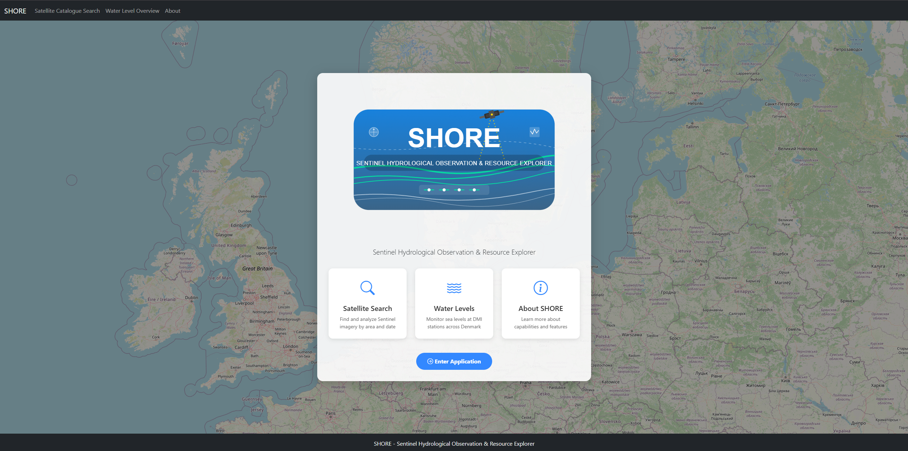
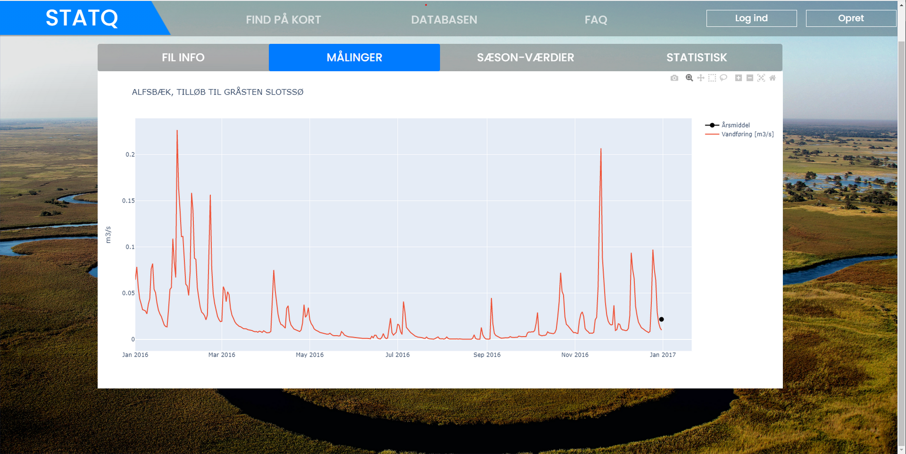
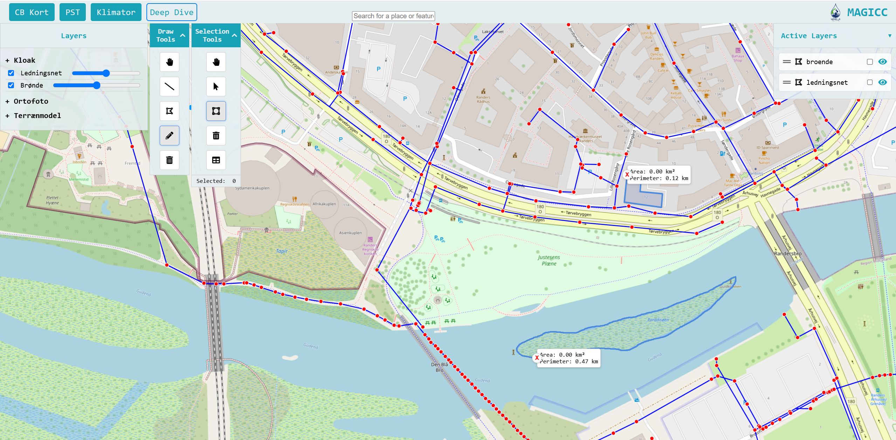

Featured Projects
Innovative solutions bridging technology and environmental science

SHORE
Sentinel Hydrological Observation & Resource Explorer - integrated platform for satellite imagery search with real-time water level data from DMI.
Python
Sentinel-2
API Integration

Click 4 Coordinates
Web-based coordinate collection tool with automatic UTM zone detection and comprehensive coordinate transformation capabilities.
JavaScript
Mapping APIs
Coordinate Systems

StatQ
Comprehensive stream data analysis platform featuring automated QH curve generation and advanced comparison tools for hydrological research.
Python
Data Visualization
Statistical Analysis

MAGICC
Modern Web GIS platform providing comprehensive geospatial overview and analysis capabilities for environmental data management.
Web GIS
Geospatial Analysis
Interactive Mapping